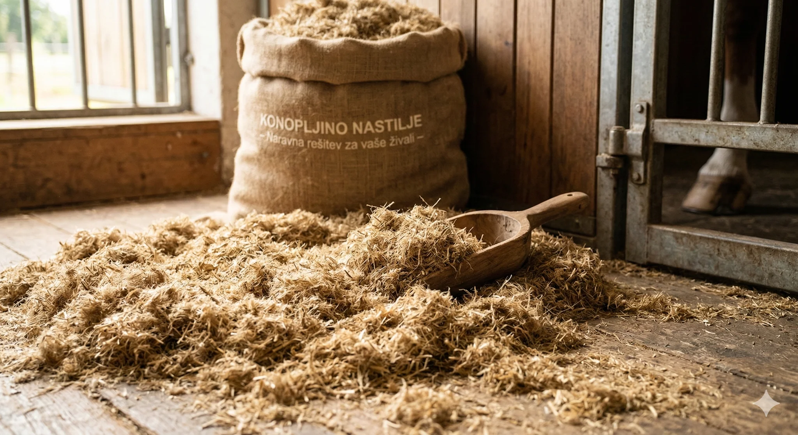
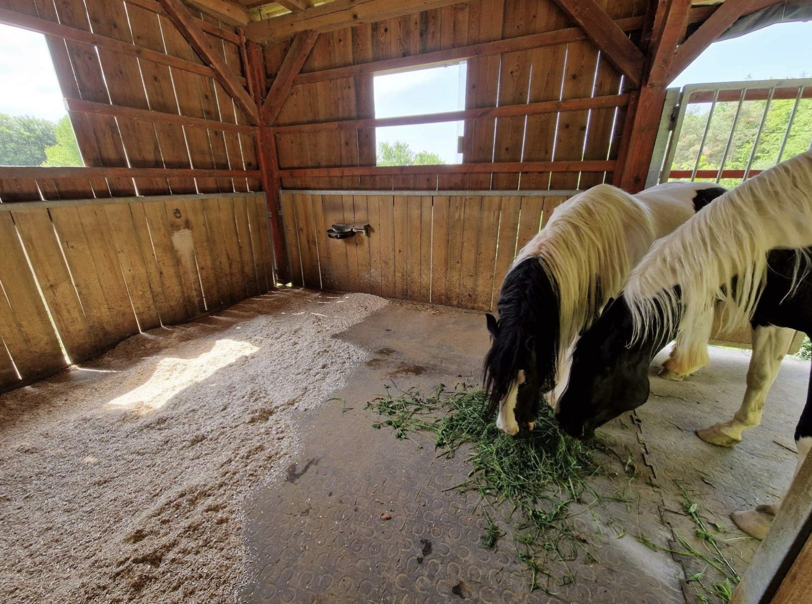
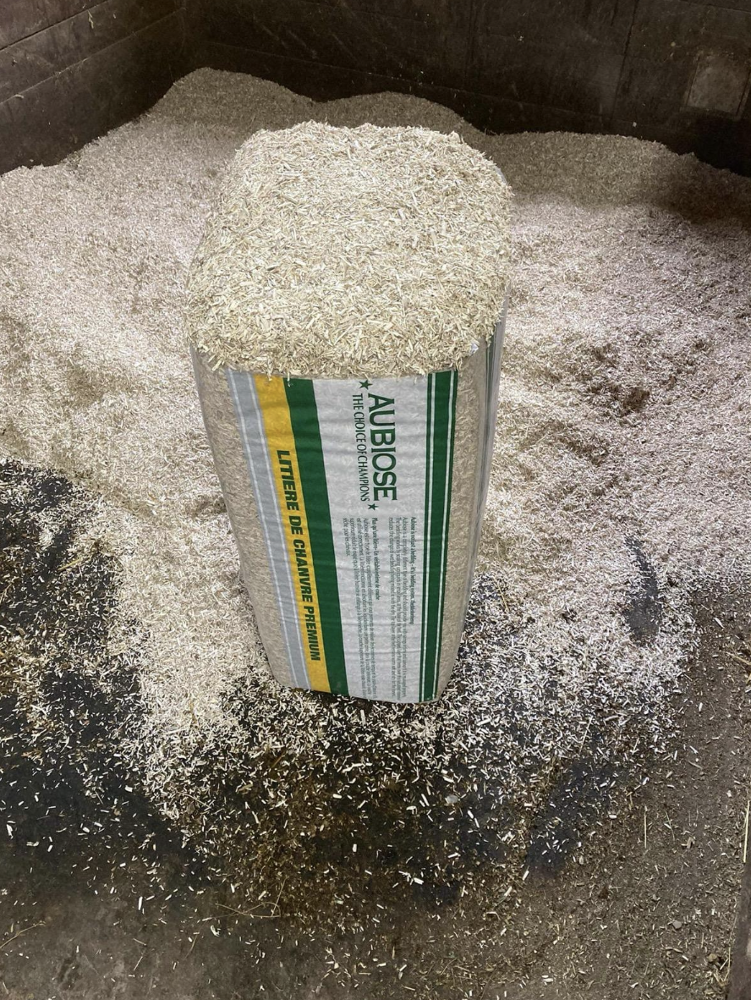
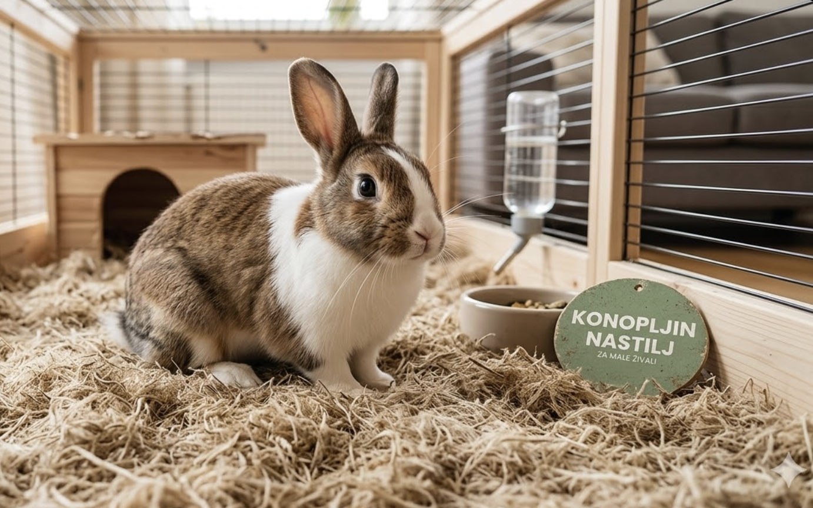
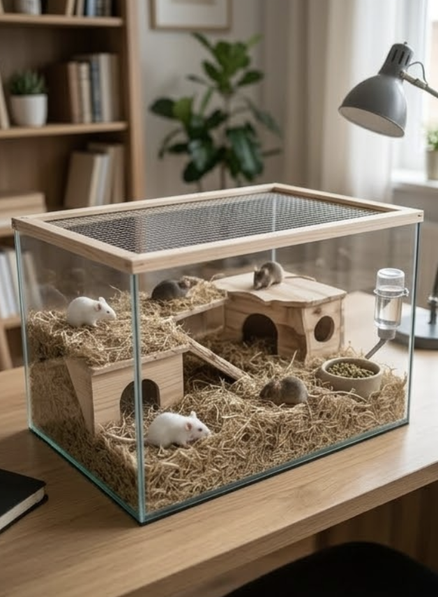
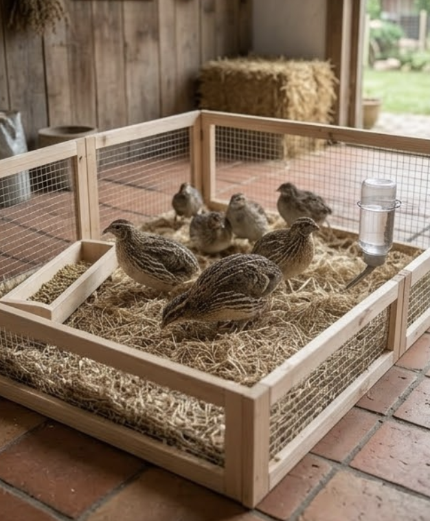
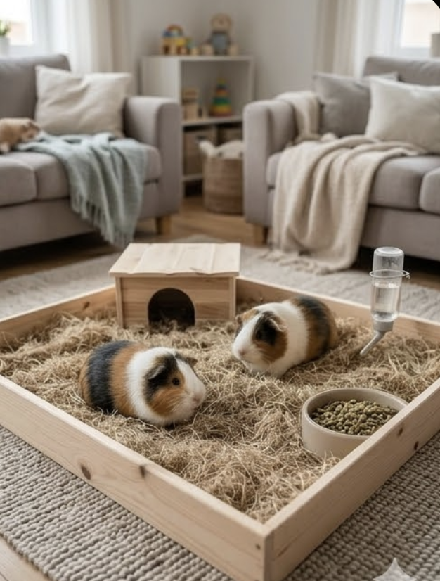
Zakaj konopljin nastilj?
Naravna izbira za vaše živali
Konopljin nastilj je postal priljubljena izbira lastnikov perutnine in malih živali, kot so zajci, morski prašički, hrčki, kokoši, ptice ter druge domače živali, saj ustvarja čisto, suho in zdravo okolje za njihovo bivanje. Zaradi svojih odličnih lastnosti ga pogosto uporabljajo tudi lastniki konj in drugih večjih živali.
Zaradi izjemne vpojnosti, skoraj popolne odsotnosti prahu in naravne razgradljivosti je konopljin nastilj ena najboljših rešitev za dobrobit vaših živali. Hkrati omogoča enostavnejše čiščenje in vzdrževanje kletk, boksov ter hlevov.
Lastnosti
Zakaj izbrati konopljin nastilj?
Izjemna moč vpoja
Konoplja vpije do 4-krat več vlage kot običajno žaganje ali slama. To pomeni, da so kopita vaših živali vedno na suhem, hlev pa ostaja svež dlje časa.
Brez prahu – idealno za alergike
Nastilj je temeljito očiščeno prašnih delcev, kar je ključno za živali z respiratornimi težavami (npr. COPD) ali občutljivimi dihali.
Nevtralizacija vonja
Naravna sestava konoplje veže amonijak, kar drastično zmanjša neprijetne vonjave v zaprtih prostorih.
Hitra razgradnja
Po uporabi se nastilj hitro spremeni v super gnojilo. Za razliko od sena ali žagovine, konopljin nastilj zemlji ne dodaja kislosti, kar omogoča vrhunsko in naravno gnojenje vaših površin.
Ekonomična poraba
Zaradi visoke vpojnosti porabite manj materiala, kar dolgoročno zniža stroške vzdrževanja hleva.
Konoplja v vrtu
Zastirka za vrt
Zaradi izjemne vpojnosti vode je konoplja idealna tudi kot zastirka za vrt. V tleh učinkovito zadržuje vlago, preprečuje izsuševanje in ustvarja optimalne pogoje za rast vaših rastlin.
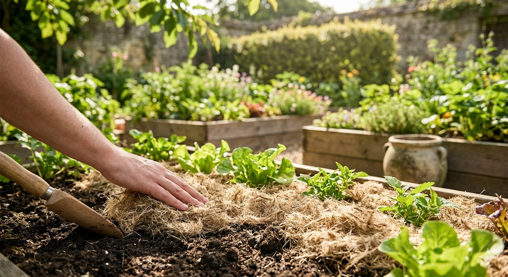
Široka uporabnost
Primerno za širok spekter živali
Čeprav je konoplja najbolj priljubljena pri malih živalih, je odlična izbira tudi za druge živali. Visoka vpojnost in odsotnost prahu zagotavljata udobje in higieno v vsakem hlevu ali nastanitev.
- Konji
- Male živali (zajci, morski prašički, itd...)
- Perutnina
- Eksotične živali
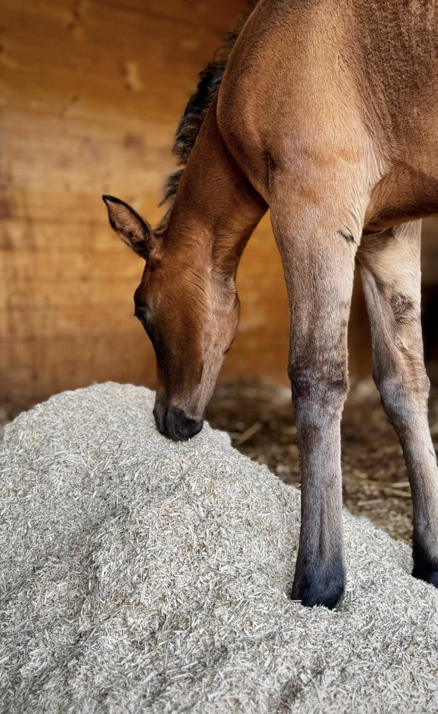
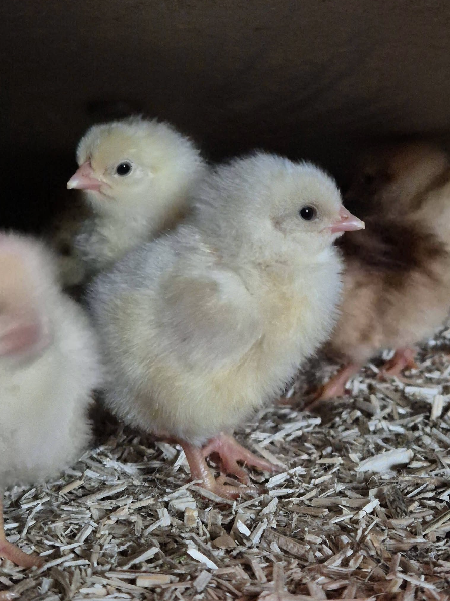
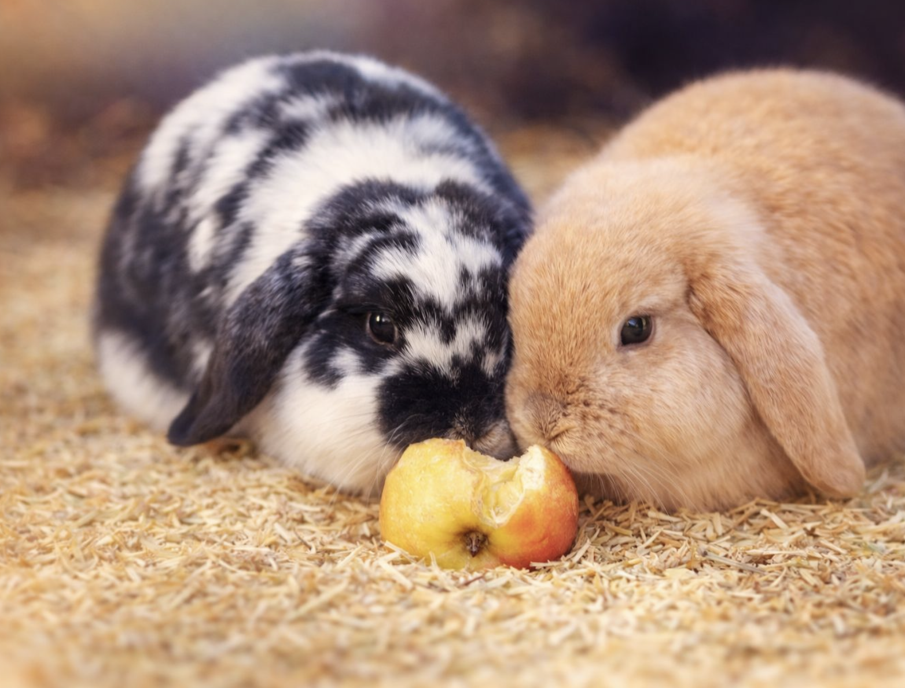
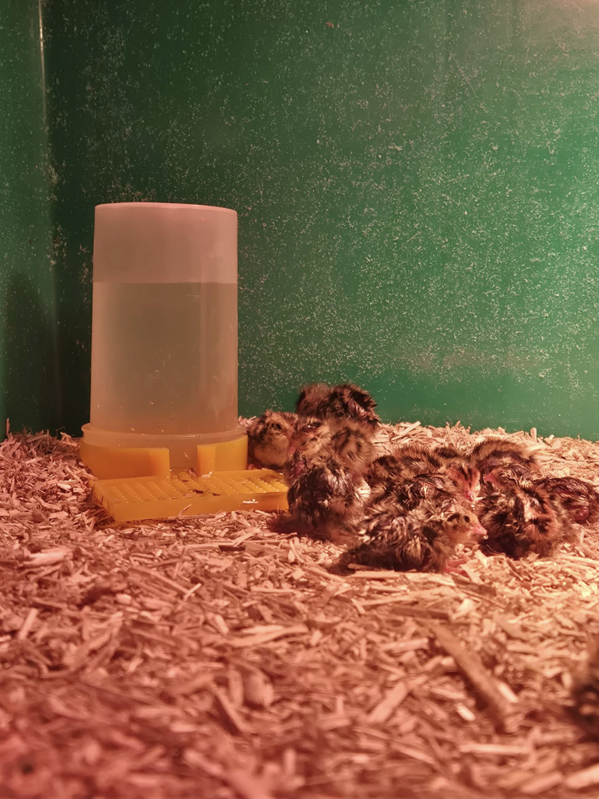
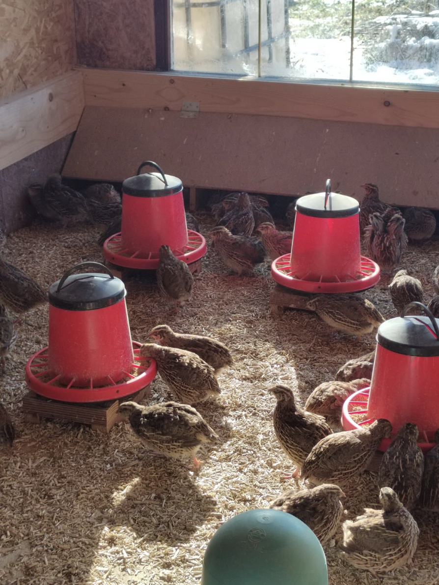
Naročilo in dostava
Ponujamo možnost nakupa posameznih bal ali večjih količin za kmetije in jahalne centre.
Oddaj povpraševanje